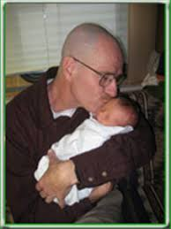

Walter White
Father, Husband & Teacher

My dad is amazing. It's funny, but I didn't know that until I
found out he was going to die. That it was going to happen
soon. That it was real. Then I thought about a lot of stuff.
Things I hadn't thought about for a long time. I guess I kind
of took him for granted or something. I mean, our parents are
just always there. You expect them to always be bugging you
to clean up your room or study harder or have good manners or
try new things to grow up to be a more well-rounded person one
day. And make you get up early on the weekend to have
"family time" and all that other stuff that used to drive me
crazy. I don't feel that way now. Everything's different since
Dad got his diagnosis. Since I realized that one day in the
near future, he might not be around to drive me crazy.
Now I feel lucky when he asks me about my day (I used to totally hate that
question) or nags me about coming home on time at night and being respon-
sible. One day he won't be here to ask. Now I feel lucky when I hear
his car pulling into the driveway after school. I even like to hear him cough-
ing. It means he's still around. Still my dad.